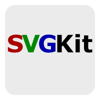
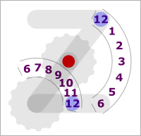
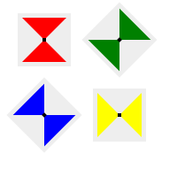
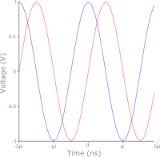

Welcome to SVGKit
SVGKit is a collection of JavaScript libraries for painless client-side SVG manipulation: SVGKit provides browser-independent access and interaction, SVGCanvas implements Canvas API with SVG-specific additions, and SVGPlot plots/graphs data and functions.
| SVGKit (live demo, type tests) -- A low-level JavaScript SVG library. Create a new SVG at runtime. Load SVG data from a URL. Conveniently handle quirks of three ways SVG can be included in browsers: object, embed, and inline. Handle different browsers and different SVG engines. Has convenience functions for DOM manipulation ala MochiKit. It manages the objects: HTMLElement, SVGDocument, SVGElement |  |
| SVGEvent (live demo) -- Additions to the SVGKit object for event handling. In SVG it can be tricky to get from mouse coordinates to local coordinates. SVGEvent has routines to enable draggable items, rotatable items, and to prevent pan and zoom on items. |  |
| SVGCanvas (live demo, live demo 2, canvas extensions) -- Implements most of the Canvas API along with some SVG-specific additions. Allows you to create an SVG more prodecurally rather than building it up with DOM manipulation (one of the disadvantages sighted by Vladimir Vukićević) The unimplimented parts of the Canvas API are things like "take what you've drawn so far, treat it like a bitmap, and run the following filter on it." Some of these are impossible in SVG, but will get better with SVG1.2. |  |
| SVGPlot (live demo, csv demo) -- A full plotting suite to eventually rival Excel, Matlab, etc. It generates clean SVG in the browser that can be saved, sent back to server for conversion to PDF, PS, PNG, etc. Live updates via AJAX for real-time data like stocks or web stats. Allows multiple plots arranged on an SVG, multiple related or unrelated axes per plot, and control of styles. Originally I was going to write it in pure Canvas code so you could have either underneath, but things like text made it too frustrating. For a related but independent project, see PlotKit. We seem to have started around the same time, but he has a more more production quality release. |  |
| SVGFontKit (font_test.svg) -- This is a hack to replace all SVG <text> and <tspan> elements that reference an embeded SVG font with references to the font's glyphs properly positioned and spaced. This hack is necesary because Firefox lacks support for SVG Fonts, and currently <text> elements are rendered and sized according to the rest of the web pages's fonts rather than pixel-perfectly anti-aliased as demanded the SVG spec seems to require. |
{kind=link}
Getting Started
- Play with some of the examples online with the MochiKit interpreter SVG examples
- Download a release or use subversion to check out the most recent version.
- Using SVGKit in your own pages -- valid XHTML and served as XHTML, thing at the top for IE, explicitly include all of MochiKit.
MochiKit , Dojo, and other libraries.
I chose to require MochiKit and use it extensively because it really doess "make JavaScript suck less." I'll admit I haven't used the library to its full capacity and welcome any suggestions on how to improve this. I'd be perfectly happy to do what is neccesary to make my library more MochiKit friendly, perhaps even being included in MochiKit if SVG becomes important. Dojo already includes a simple SVG Chart widget.
History
I'm Jason Gallicchio, a physics graduate student at Harvard working on theoretical particle physics and cosmology. I developed this as a graphics and plotting interface for my mostly Java-Applet educational site BrainFlux.org and also for the web interface to our Optical SETI experiment. I looked into SVG and played around with Batik a bit. Then one of my research groups implemented a full web app using Python, TurboGears, and MochiKit. We wanted to interactively pull data out of a web page and plot it. Also we wanted a Google Maps type interface for stars. I started working on this in January 2006 off and on.
Things I want to do with it
- SVGWidgets -- Buttons, sliders, textboxes, etc. to make a web app more like a desktop app (or a whole desktop environment), perhaps using GNOME SVG widgets.
- SVGDraw -- Online SVG Editor (useful for a wiki.) It would be a kind of rudimentary Inkscape.
- SVGLaTeX -- Math for SVG. LaTeX fonts. Providing a
<path>as an alternative to text. MathML would be more appropriate, perhaps, but it just doens't look as good yet. - Plot Interactivity -- create and edit plots, smarter zooming, selecting data, position legend, click to edit title, select colors with GUI, etc.
- Realtime plots -- stocks, web logs, ... -- add additional data points without undoing changes.
- Plots from a database -- interactively select data to plot and plot options. WikiDatabase where people can add and view structured data?
- Interactive math/physics educational stuff like Compass & Ruler
- Clean up the SVG that SVGCanvas and SVGPlot generate and make the code run faster. These are sometimes at odds. For example, should it spend time factoring out common styles to an enclosing group?
- Graphics are an excellent way to learn programing. Using client-side JavaScript anybody can instantly learn by modifying and writing examples.
- Web-based X-Windows client (some of this more appropriately done with Canvas, or perhaps embeded Canvases within SVG.) X commands would have to be tunneled through HTTP on the web server because of the JavaScript network security restrictions.
Requirements
- MochiKit 1.3 or higher
- SVG-supporting Browser: Firefox 1.5+, Opera 9+, Internet Explorer 6+ with Adobe SVG plugin.
License
- SVGKit is copyright (c) 2006 Jason Gallicchio. Licensed under the MIT license (least restrictive of the BSD-style licenses). It is GPL-compatible.
Projects that Use SVGKit
StarMapSVG Complaints/Outlook:
Adobe's Plugin is way ahead of Firefox in terms of a completeness, speed, and interface features (like zooming, viewing the SVG in its own window, and viewing the SVG source.)
Fonts are a huge problem. The SVG spec is written so that you can embed a font and use it so you get precise alignment and pixel-perfect anti-aliased rendering. When you're rendering axis labels, I query the exact dimensions of the resulting text for optimal placement. None of this works (very well) in Firefox yet. Unline TrueType, SVG fonts don't support hinting (the mechanism that says "render the resolution independent path for the letter A ten pixels high, but then flip the following pixels because it'll look better that way). SVG creation programs have to manually lay out glyphs and will never have great low-resolution output.
Sounds. This is more of a JavaScript problem, but I'd like to
give it .wav and .mp3 files to play, and be able to generate raw
wav or mp3 data programatically and send it to be played (for a Fourier
synthesis program, for example.)